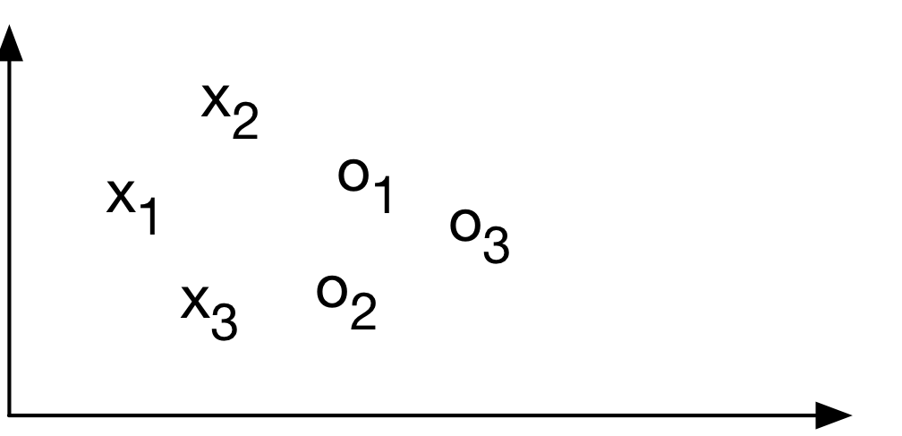
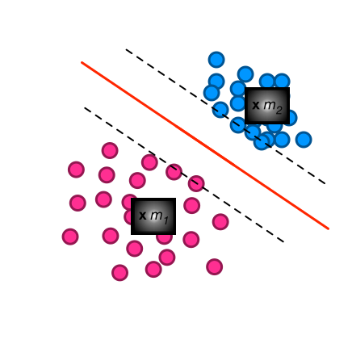
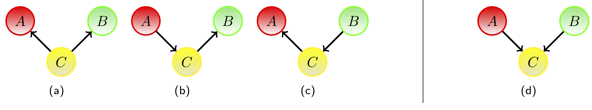
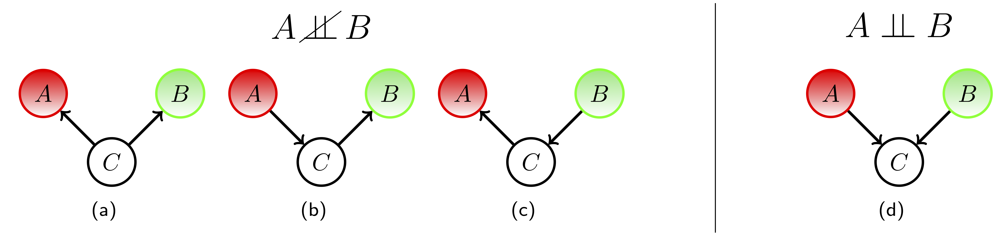
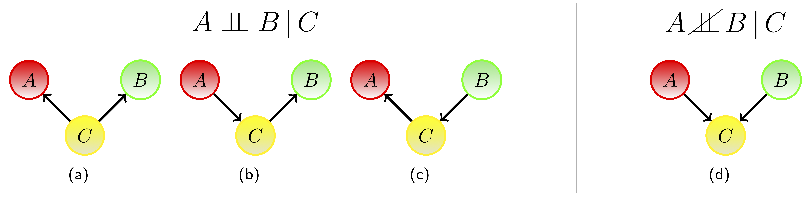
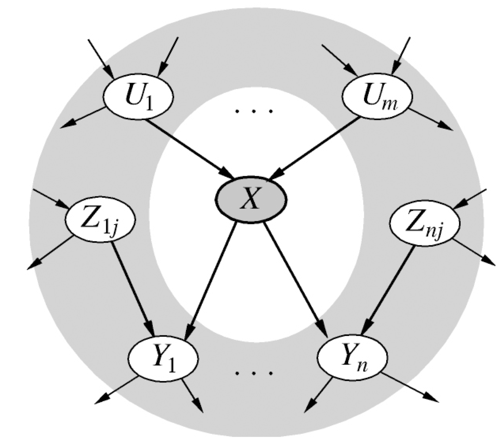
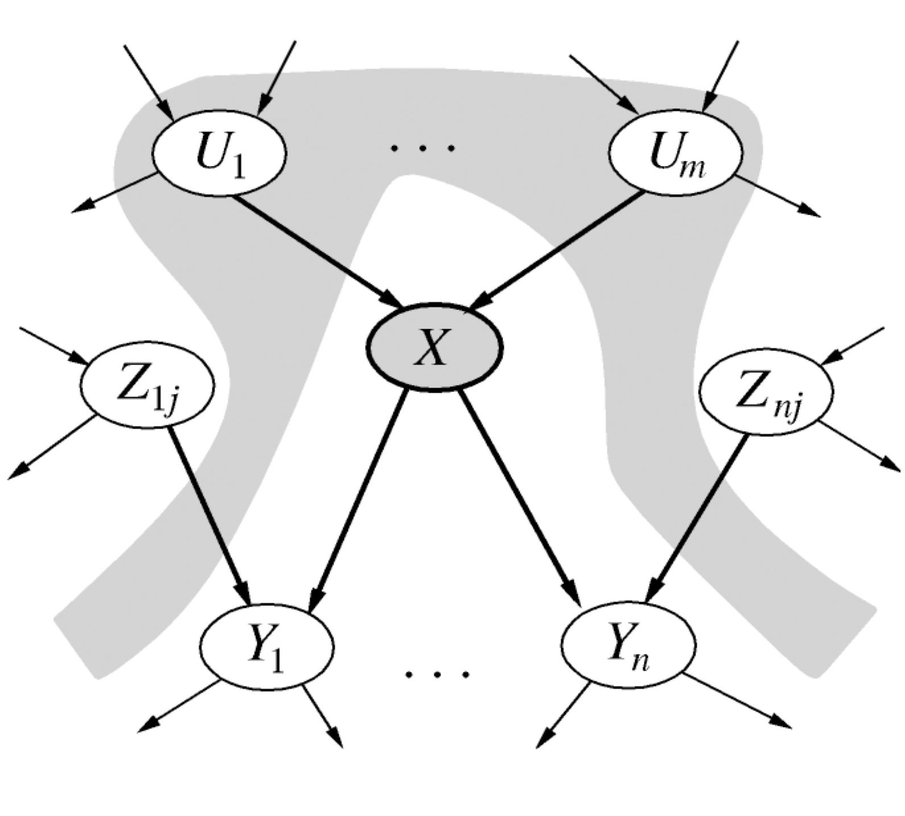

Quiz Setup
Quiz: Classification using SVM
You are using a Linear Support Vector Machine classifier for classification into two classes (x and o’s). Removing which points will not affect the decision boundary?

- \(x_1\) and \(o_3\)
- \(x_2\) and \(x_3\)
- \(x_3\) and \(o_2\)
- You can’t remove any points.
Largest margin Separation
- this only involves some data points (support vectors)
- the constrained optimization can be solved through a Lagrange multiplier
- this leads to the hyperplane decision function \[ \alpha_i \geq 0, \\ f( \vec{x}) = sgn(\sum_{i=1}^m \alpha^{(i)} y^{(i)} \langle \vec{x}, \vec{x}^{(i)} \rangle + b \ )\]

\[ \max_{\vec{w}, b} \min \{ \norm{\vec{x} - \vec{x}^{(i)}} \} \\ with \langle \vec{w}, \vec{x} \rangle + b = 0 \text{ defining the hyperplane} \]
Quiz: Error in SVM
What do you mean by generalization error in terms of the SVM?
- How far the hyperplane is from the support vectors
-
How accurately the SVM can predict outcomes for unseen data
- Generalisation error in statistics is generally the out-of sample error which is the measure of how accurately a model can predict values for previously unseen data.
- The threshold amount of error in an SVM
Quiz: Parameters of SVMs
When the C parameter is set to infinite, which of the following holds true?
-
The optimal hyperplane if exists, will be the one that completely separates the data
- This sets a high level of misclassification penalty, might lead to overfitting.
- The soft-margin classifier will separate the data
- None of the above
Quiz: RBF SVM
Suppose you are using RBF kernel in SVM with a high Gamma value. What does this signify?
- The model would consider even far away points from the hyperplane
-
The model would consider only the points close to the hyperplane
- The gamma parameter in SVM tuning signifies the influence of points either near or far away from the hyperplane. For a low gamma, the model will be too constrained and include all points of the training dataset, without really capturing the shape. For a higher gamma, the model will capture the shape of the dataset well.
- The model would not be affected by distance of points from hyperplane
- None of the other
Summary: Support Vector Machine

- Support vector machines implement the large margin principle.
- They apply non-linear mappings.
- Importantly, the scalar product is not computed explicitly in the feature space. using the Kernel Trick. This is much more efficient.
- The kernel function (weighted by multipliers) is applied wrt. the support vectors.
SVMs go back to (Vapnik 1998) , and a good tutorial can be found in (Burges 1998).
Part of the questions were taken from https://www.analyticsvidhya.com/blog/2017/10/svm-skilltest/ .
Quiz: Features
Which of the presented approaches are based on transformation of the original features into a different feature space?
- Support Vector Machines and Gaussian Processes,
- Gaussian Processes and Echo State Networks,
- Support Vector Machines and Echo State Networks,
- all of these.
Quiz: Gaussian Process
Which of the following statements is NOT true about Gaussian processes?
- A GP is a collection of random variables, any finite number of which have a joint Gaussian distribution.
- A GP is completely specified by its mean function and covariance function.
- A GP is usually specified with zero mean for simplicity.
- A GP must be defined over time (the index set of the random variables is time).
Gaussian Process – Bayesian Perspectives on Functions
Create Gaussian Distribution for each variable – distribute these through your space.
Informally such an infinite long vector constitutes a function.
A Gaussian process is a collection of random variables, any finite number of which have (consistent) Gaussian distributions.
Prior
Posterior
Quiz: Gaussian Process
Gaussian Proceeses are
- non-parametric, but allow to specify noise over data points,
- a parametric approach that approximates data points through mixture of Gaussians,
- none of the above.
Gaussian Processes Overview
- aware of uncertainty of the fitted GP that increases away from the training data,
- let you incorporate expert knowledge,
- are non-parametric,
- need to take into account the whole training data for prediction.

Further reading: (Rasmussen and Williams 2006).
Quiz: Bayes Rule
\[\begin{align*} p(A,B) &= p(A|B)p(B) = p(B|A) p(A) \\ \Rightarrow p(B|A) &= \frac{p(A|B) p(B)}{p(A)} \end{align*}\]
Which of the following probabilities is hard to access and Bayes rule provides an easier factorization?
- The likelihood.
- The joint distribution.
- Both.
Bayes’ rule
… tells us how to invert conditional probabilities:
\[\begin{align*} p(A,B) &= p(A|B)p(B) = p(B|A) p(A) \\ \Rightarrow p(B|A) &= \frac{p(A|B) p(B)}{p(A)} \end{align*}\]
Here,
- \(p(B)\) is the a priory probability, or the prior,
- \(p(A|B)\) is the likelihood of \(B\) for a fixed \(A\),
- and \(p(B|A)\) is the a posteriori probability of \(B\) given \(A\).
Solution: Joint Distribution
Explicit representation of joint distribution becomes unmanageable for realistic scenarios.
- computationally expensive,
- involves a huge number which is too large
- to estimate by a human expert,
- or even to store in memory,
- would require large amounts of data and samples for robust estimation,
- probabilities itself would be very small numbers hindering computation,
- and rare events might not be captured which would negatively affect generalization.
Recap - The need for structure
We often want to describe many objects (features in a data set for many individuals).
Unfortunately, often the representational and computational cost of probabilistic models grows exponentially with the number of objects represented.
Therefore, ‘simpler’ alternatives (e.g. fuzzy logic) were introduced to avoid some of these diculties.
Independence in Belief Networks
Consider the simplest case of the joint distribution \(p(x_1, x_2, x_3)\)
- no indep. assumption: six different factorisations \(P(x_{i1}|x_{i2},x_{i3})P(x_{i2}|x_{i3})P(x_{i3})\) and different DAGs, representing the same distribution
- one indep. assumption: four possible graphs left - which ones are equivalent?

Following (Barber 2012)
Quiz: Independence in Belief Networks
For the four possible graphs – which joint distribution \(p(A, B)\) is independent?
- a and d
- a, b and c
- d
- b and c
Solution: Independence in Belief Networks

- In (a), (b) and (c), the variables A, B are marginally dependent.
- In (d) the variables A, B are marginally independent.
\[ p(A, B) = \sum_C p(A, B, C) = \sum_C p(A)p(B)p(C|A, B) = p(A)p(B) \]
Recap - Independence
Variables \(x\) and \(y\) are independent if knowing one event gives no extra information about the other event. Mathematically, this is expressed by \[ p(x, y) = p(x)p(y) \]
Independence of x and y is equivalent to \[ p(x|y) = p(x) \Leftrightarrow p(y|x) = p(y) \]
If \(p(x|y) = p(x)\) for all states of \(x\) and \(y\), then the variables \(x\) and \(y\) are said to be independent. We write then \(x \perp\!\!\!\perp y\).
Interpretation
Note that \(x \perp\!\!\!\perp y\) doesn’t mean that, given \(y\), we have no information about \(x\). It means the only information we have about \(x\) is contained in \(p(x)\).
Conditional Independence in Belief Networks
Conditional independence is not always immediately clear. We would like to have a general algorithm for reading it from the graph.
Consider the simplest case of the joint distribution \(p(x_1, x_2, x_3)\)
- no indep. assumption: six different factorisations \(P(x_{i1}|x_{i2},x_{i3})P(x_{i2}|x_{i3})P(x_{i3})\) and different DAGs, representing the same distribution
- one indep. assumption: four possible graphs left - which ones are equivalent?
Following (Barber 2012)
Quiz: Conditional Independence in Belief Networks
For the four possible graphs – which joint distribution is conditionally independent (given \(C\))?
- a, b, c, d
- a, b and c
- only d
- b and c
Solution: Cond. Independence in Belief Nets

- In (a), (b) and (c), \(A, B\) are conditionally independent given \(C\).
\[\begin{align*} (a) \ p(A, B|C) &= \frac{p(A,B,C)}{p(C)} = \frac{p(A|C)p(B|C)p(C)}{p(C)} = p(A|C)p(B|C)\\ (b) \ p(A, B|C) &= \frac{p(A) p(C|A) p(B|C)}{p(C)} = \frac{p(A,C)p(B|C)}{p(C)} = p(A|C)p(B|C)\\ (c) p(A, B|C) &= \frac{p(A|C)p(C|B)p(B)}{p(C)} = \frac{p(A|C)p(B,C)p(C)}{p(C)} = p(A|C)p(B|C) \end{align*}\]
- In (d) the variables A,B are conditionally dependent given C, \(p(A, B|C) \propto p(C|A, B)p(A)p(B)\).
Conditional Independence
\[X \perp\!\!\!\perp Y | Z\] denotes that the two sets of variables \(X\) and \(Y\) are independent of each other given the state of the set of variables \(Z\).
This means that \(p(X,Y|Z) = p(X|Z)p(Y|Z)\) and \(p(X|Y,Z) = p(X|Z)\) for all states of \(X,Y,Z\).
In case the conditioning set is empty we may also write \(X \perp\!\!\!\perp Y\) for \(X \perp\!\!\!\perp Y | \emptyset\), in which case \(X\) is (unconditionally) independent of \(Y\).
Quiz: Markov Blanket
A node‘s Markov blanket (MB) are all parents, children, and other parents of children of \(X\).

- X is conditionally independent of its Markov Blanket.
- X is conditionally independent of all other nodes outside of the MB.
- X is cond. independent of all other nodes outside of the MB given its MB.
- None of the other.
Following from (Barber 2012)
Bayesian Networks – Causal Interpretation
The MB carries all information about X, or “insulating” X from any external informational influence.
By way of its mathematical definition, the Bayesian Network represents a set of conditional independence assumptions: each node is conditionally independent of its non-descendants, given its parents
- the parents of node \(X\) are causally interpreted as causes of \(X\), descendants of \(X\) as effects of \(X\)
- having information about the direct causes of \(V\), the belief in \(X\) is no longer influenced by any other information, except about the effects of \(X\)

Following from (Barber 2012)
Barber, David. 2012. Bayesian Reasoning and Machine Learning. New York, NY, USA: Cambridge University Press.
Burges, Christopher J. C. 1998. “A Tutorial on Support Vector Machines for Pattern Recognition.” Data Mining and Knowledge Discovery 2: 121–67.
Rasmussen, CE., and CKI. Williams. 2006. Gaussian Processes for Machine Learning. Adaptive Computation and Machine Learning. Cambridge, MA, USA: Biologische Kybernetik; Max-Planck-Gesellschaft; MIT Press.
Vapnik, Vladimir N. 1998. Statistical Learning Theory. Wiley-Interscience.